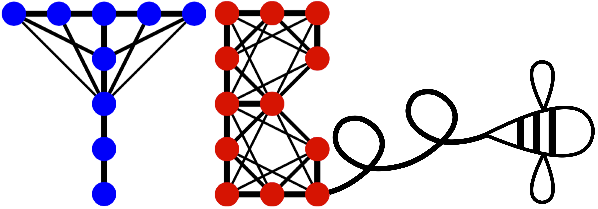
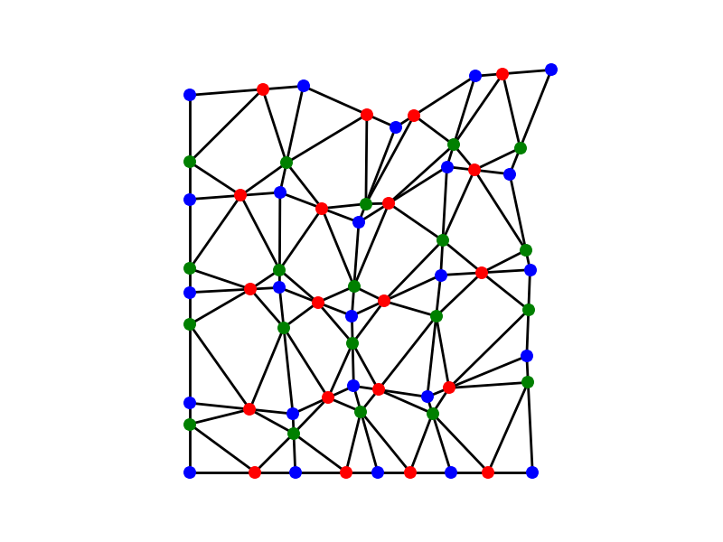
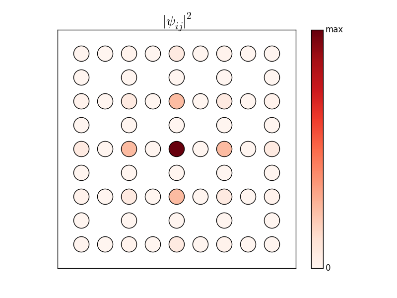
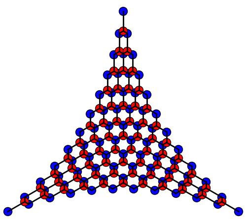
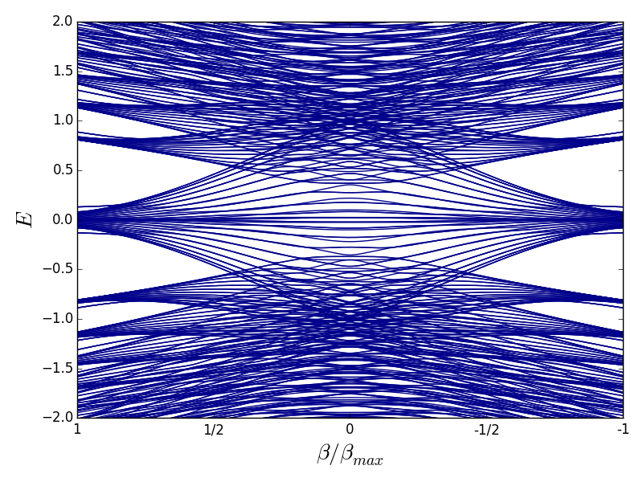

Programming
TBEE Package
Tbee is a package providing a Python implementation, with heavy use of numpy vectorization, of Tight-Binding models. It can be used to build up and solve tight-binding models with complex-valued onsite energies and hoppings. Tight-binding chain (use of an outdated version tbee package)
with a special emphasis on PT-symmetry and protected zero-modes._ea0,2j_eb-0,2j.png)
_tb(1+0j).png)
Tight-binding Lieb lattice (use of an outdated version of tbee package)
with a special emphasis on protected zero-modes induced by reduced chiral symmetry.  Tight-binding Graphene (use of an outdated version of the tbee package)
with a special emphasis on pseudo Landau levels and localized states induced by vacancy defects and negative couplings.   ocumentations
Git doc
 How to backup files and projects.
How to backup files and projects.
Python installation doc
 How to install python and its numerical modules on Windows, Mac, and Linux.
How to install python and its numerical modules on Windows, Mac, and Linux.
Sphinx doc
How to get html documentations from python codes.
Git doc
How to backup files and projects.
Python installation doc
How to install python and its numerical modules on Windows, Mac, and Linux.